Audit
Website Audit for JustCall
Overview
More requests. Same design team.
This audit covers a UI/UX redesign of JustCall's website, including the hero, tabs, integrations, testimonials, pricing, footer, and other core components that make up the site.
For each one, I've laid out what wasn't working in the before design, why it wasn't working, and how the after design fixes it. The goal wasn't to fix individual screens in isolation, but to build a consistent design system that could be reused across the entire site.
Once the core components were redesigned, I put them together into reusable page templates: Solutions, Product, and Hub/Overview, to show how the system holds up across different page types and content needs, not just as one-off fixes.
To ground the redesign in something outside the product itself, I also benchmarked JustCall against category leading SaaS sites, to see which conventions were worth adopting and where JustCall's own patterns needed to change.
Competitor Research
Benchmarked against category leading SaaS sites: Clay, Zendesk, Deel, Mews, Retool, Quo, Unify, Monday, GitBook, Spade, and Giga.

Homepage vs. inner pages: Homepage can break convention. Inner pages stay consistent, same brand color, type, and components throughout.
Sentence case copy: Adopted for consistency, not readability, easier to enforce across writers than title case. Also avoids the "shouting" tone of heavy caps.
Hero fold: Center or left aligned based on context. No generic stock photos. Industry pages use scenario specific scenes, referencing Zendesk.
Screenshot presentation: Shift away from abstract illustration toward real product UI. Real screenshots carry more proof weight than decorative art.
Statistics sections: Typography does the heavy lifting, large bold numbers paired with smaller supporting text, playing with font weight and size to create instant visual hierarchy. Full sentence outcome headlines, not bare numbers. Named, linked customer proof only, no placeholder numbers.
Main features, bento, and security fold: Standard features use zig zag layout, max three items, short subtitles. Disruptive folds (security, industry sections) break this pattern on purpose. Screenshots prioritized over icons.
Final CTA: One consistent CTA style site-wide, only copy changes per page.
Integration fold: Micro animations and arrow interactions used instead of plain "Learn more" links.
Navbar

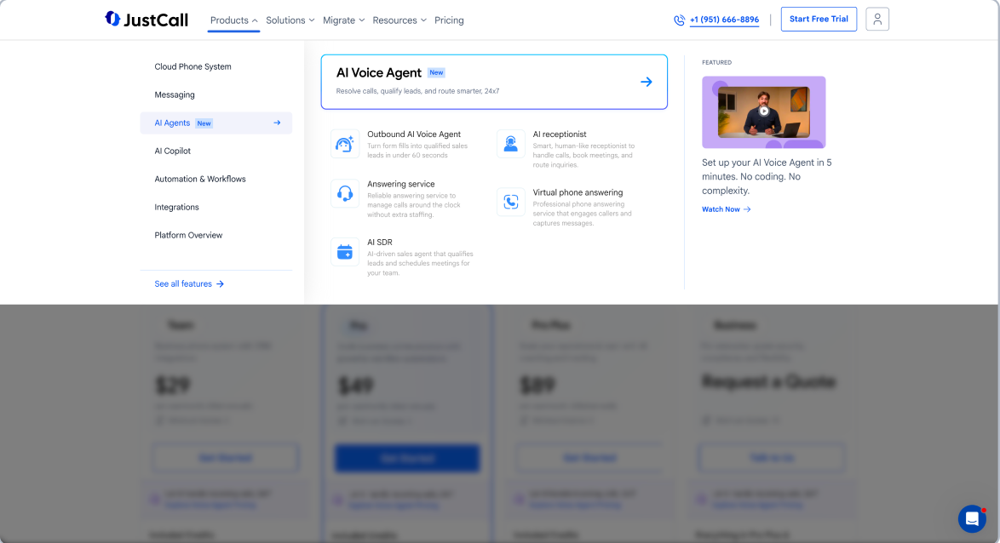
Observation: The dropdown has multiple sections, small feature links, and a featured card, making it harder to scan quickly.
Problem: The navigation feels like a feature directory, with limited guidance on where users should look first.
Root Cause: Features are prioritised over user needs, with weak visual hierarchy between sections.
Fix: Reorganised the dropdown into Connect, Engage, and Grow, with dedicated product cards and a customer spotlight.
Design Mechanics:
Purpose-led grouping: Features organised by user goals.
Clear hierarchy: Product cards, headings, and simplified links improve scanning.
Product visibility: Core offerings highlighted with visuals and descriptions.
Customer proof: Real results reinforce credibility.
Reduced clutter: Fewer icons and cleaner spacing improve readability.
Hero (Center-aligned)
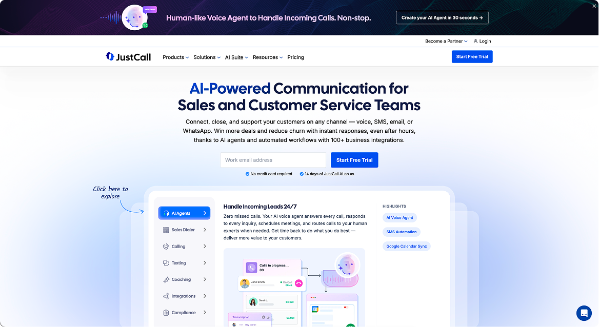
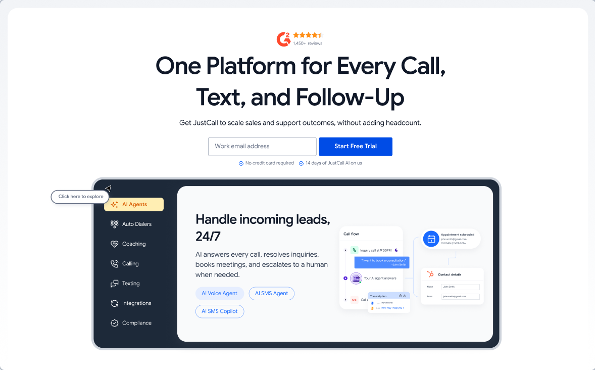
Observation: Too many elements competing for attention at the top of the fold, the headline, CTA, badges, and a busy dashboard graphic all at once.
Problem: The graphic looks decorative, not interactive. A text label has to explain that it's clickable, when the design itself should show that.
Inside it, information is scattered with no clear starting point, so the eye has to search instead of follow a path.
Root Cause: No clear visual hierarchy. Every element carries similar weight, so nothing tells the viewer what to look at first.
Fix: Center-aligned headline and subtext give the eye one clear path. The G2 badge sits above the fold to lead with trust before the pitch. The dashboard graphic is simplified with a clear visual hierarchy of its own.
Design Mechanics:
Active tab: Acts like a breadcrumb. The viewer always knows which section they're in.
Repeating layout: Heading, short line, linked tags. Same structure across tabs, so the eye learns it once and reuses it.
Clickable look: A highlighted tab draws the eye on its own, instead of relying only on a text callout.
Hero (Left-aligned)
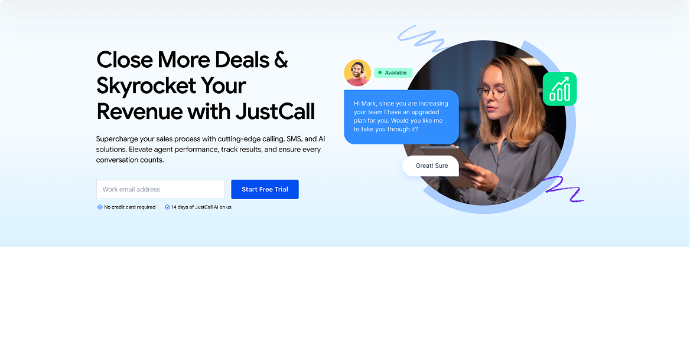

Observation: Stock photo style graphic paired with a floating chat bubble UI element, sitting side by side with the text block.
Problem: The graphic is generic and does not represent the actual product. The chat bubble is a UI mock, not a real interface, so it does not build familiarity with what the tool actually looks like. The photo also adds visual weight without adding meaning, competing with the text instead of supporting it.
Root Cause: No connection between the graphic and the product. The visual is decorative, not functional.
Fix: The stock photo is replaced with a dark themed product style panel, showing a real looking dialer interface with live metrics and queue status.
This shifts the graphic from decorative to informative.
Design Mechanics:
Product style visual: The graphic now resembles an actual dashboard, not a staged photo, so it reads as proof rather than decoration.
Layered card depth: A second card peeks out from behind the main panel, adding depth without adding clutter.
Consistent dark theme: The dark background ties the graphic and headline together as one visual block, instead of two competing elements.
Capsule tabs


Observation: Tabs are shown as plain underlined text labels, sitting in a row above the content block.
Problem: An underline is a weak signal for the active state. It sits low and doesn't stand out against the other tabs, so the viewer has to look twice to confirm what's selected.
Root Cause: No strong visual separation between interactive and non-interactive elements in the tab row.
Fix:
Tabs are now capsule shaped, with the active tab filled in solid dark, giving a much stronger, more immediate signal of state.
Design Mechanics:
Solid active state: A filled capsule reads as selected instantly, no second look needed.
Consistent content swaps: The block below the tabs follows the same structure every time, so the viewer knows where to look.
Flexible content format: The layout works with or without bullet points, adjusting to shorter or longer content.
Product UI over stock imagery: The supporting graphic is now an actual product dashboard, so the viewer understands what they're getting.
Features (bento)
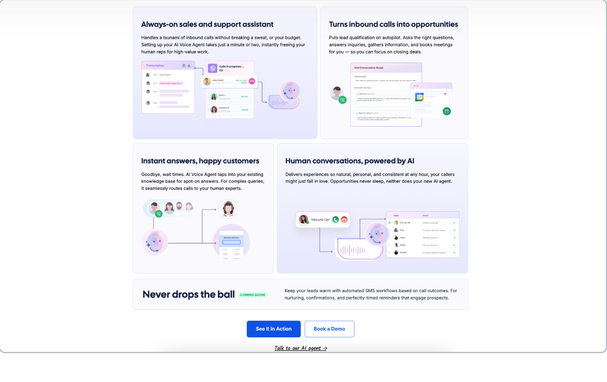

Observation: The before version uses an uneven 2+2+1 grid, with cards varying in size and mixing different illustrative graphics.
Problem: With no consistent size, graphic style, or text length across cards, each one has to be read on its own terms, five separate designs instead of one system.
Root Cause: No consistent structure across cards, everything varies block to block.
Fix: The after version locks the section into a repeatable grid, a two-card row followed by a three-card row. Every card follows the same structure: short heading, one line of text, and a dedicated space for a product graphic.
Less to read, easier to scan.
Design Mechanics:
Consistent card anatomy: Same heading, subtext, graphic order across every card, so the eye learns the pattern once.
Flexible grid: Supports even and uneven groupings without breaking the system, letting the section scale with content.
Product graphic space: Each card reserves a slot for a real product screenshot, grounded in proof, not decoration.
Integrations
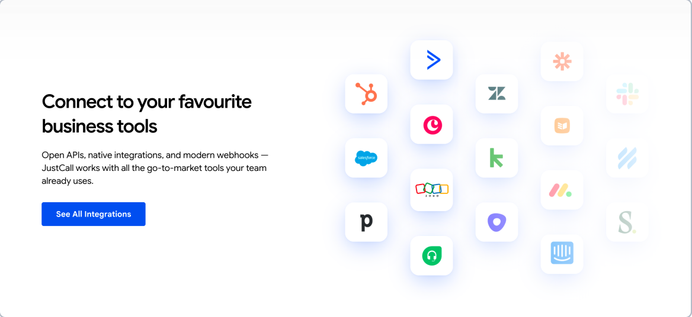

Observation: Logos are arranged in a scattered grid, three columns wide, with outer edges fading into the background.
Problem: A grid gives the eye no clear path to follow, reading as a cluster rather than a list. Logos also vary in style, some colored, some monochrome, so the row feels inconsistent.
Root Cause: No motion and no consistent visual treatment, so every logo carries the same weight with no sense of scale or activity.
Fix: Logos now sit in a single row that scrolls continuously, giving the section a sense of motion and scale a static grid can't. All logos are treated the same way for consistency.
Design Mechanics:
Single row layout: One horizontal line is easier to scan than a multi-row grid.
Continuous scroll: Motion signals a larger, ongoing list without cramming every logo on screen.
Grayscale to color transition: Logos pass through the JustCall icon in grayscale and come out in color, reinforcing the idea of becoming "connected."
Quantified headline: "70+ integrations" backs the visual with a concrete claim.
Social Proof


Observation: Social proof was split across two separate folds, one showing aggregate stats (40%, 30%, 18%), another further down showing a single customer quote.
Problem: Splitting proof into two folds adds page length without adding value.
Each fold shows only one static data point, so neither carries much weight on its own.
Root Cause: Stats and testimonials were treated as two different content types needing two different folds, instead of one combined proof unit.
Fix: Stats and testimonials are combined into a single fold that rotates through multiple testimonials.
This cuts page length while showing more proof, more customers, more data points, in the same space.
Design Mechanics:
Carousel rotation: Multiple testimonials cycle through one fold instead of needing several.
Progress dots: Multiple testimonials cycle through one fold instead of needing several.
Two variations, same structure: A dark, quote-only version for lighter pages, and a light version with added stats for extra weight.
Stat and quote pairing (light variation): Metrics sit directly under the quote, so the number and person are read together.
Pricing
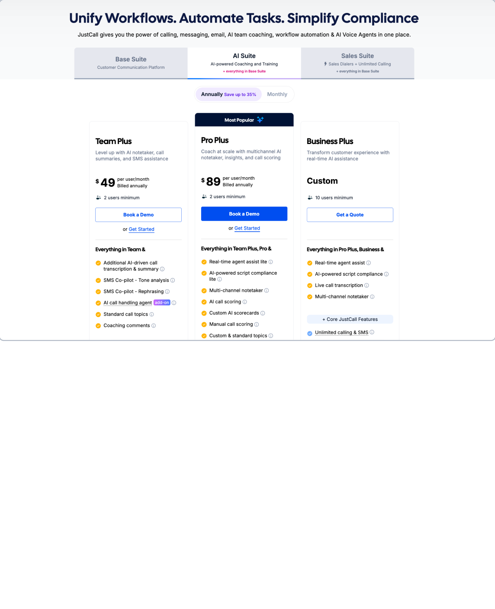

Observation: Plans are grouped under three broad suite tabs (Base, AI, Sales Suite), each showing three pricing tiers underneath.
Problem: The tab layer adds an extra decision before the viewer reaches a price, first picking a suite, then comparing tiers within it.
Root Cause: Plans are organized by category first, price second, adding a navigation step before comparison starts.
Fix: Plans are shown as one flat row of cards, ordered by price, with a highlighted "Most Popular" card for guidance.
This removes the tab layer, comparison starts immediately.
Design Mechanics:
Flat card row: All plans sit side by side, so the viewer compares once, not twice.
Highlighted recommended card: A "Most Popular" tag and distinct border on the Pro card gives new visitors a default choice.
Region selector added: A Call & SMS region field sits next to the billing toggle, letting pricing reflect local relevance upfront.
Two variations: A full version for the pricing page, and a condensed version for mid-page use, same structure, less detail.
Footer
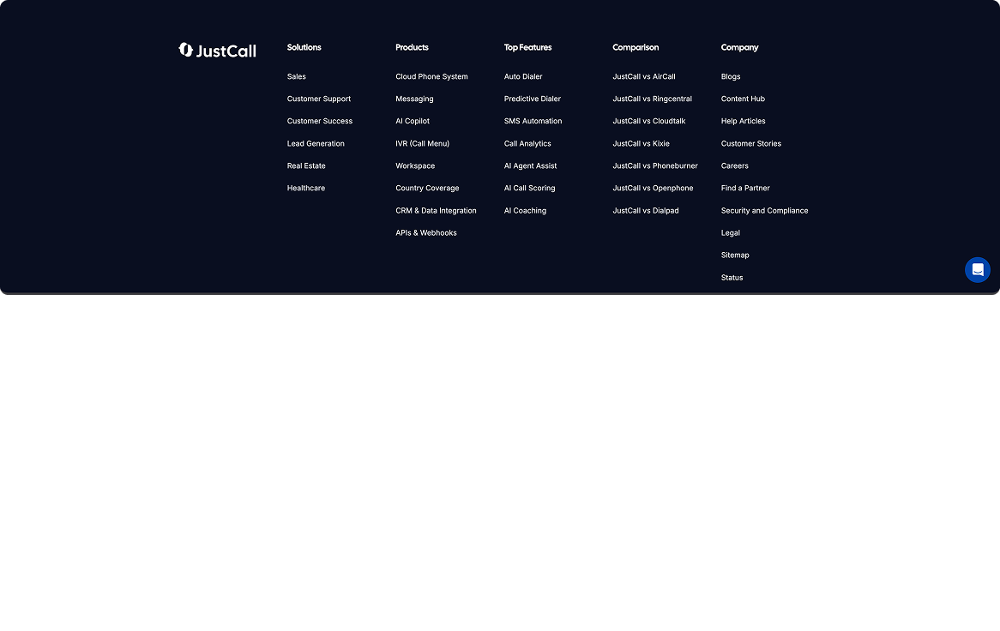
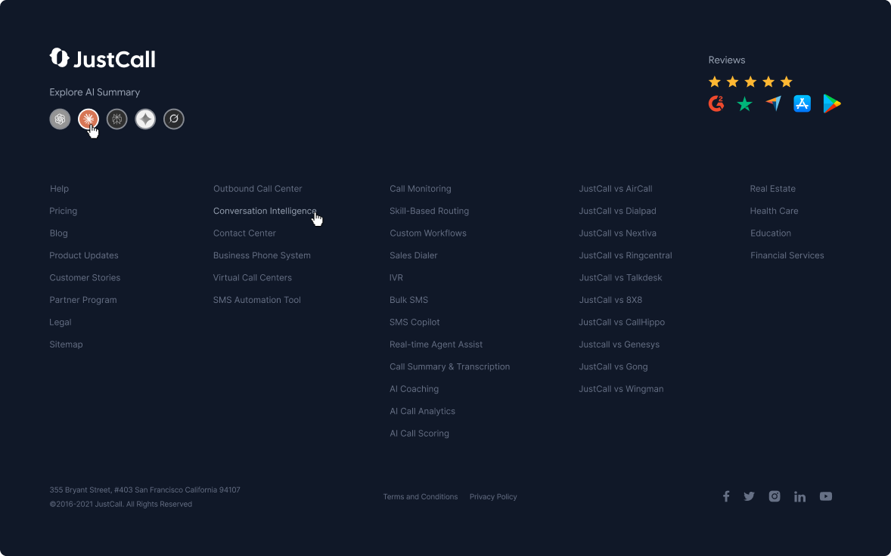
Observation: A dense, five column link list sits directly below the CTA banner, on a solid navy background. No trust signals or reviews present in the footer.
Problem: Every link carries equal visual weight, same text, size, and spacing.
With no hierarchy between primary links (Pricing, Blog) and long-tail pages (JustCall vs X), the footer reads as one dense block.
Root Cause: No visual hierarchy applied to footer content, everything is treated as equally important.
Fix: The link-heavy structure stays, but link color and weight are dialed down to a lower contrast grey, letting the footer sit quietly in the background, while active hover states stay clearly visible.
Design Mechanics:
Muted link color: Lower contrast grey reduces visual noise, since 50+ links don't need to compete for attention.
Review badges added: G2, Capterra, App Store, and Play Store ratings now sit top right, a new trust layer.
AI summary row added: A new "Explore AI Summary" row targets AI and LLM discoverability.
Consistent dark theme: Background stays dark, matching the sitewide convention, now feeling like a calm utility zone rather than a second CTA push.
Footer Banner

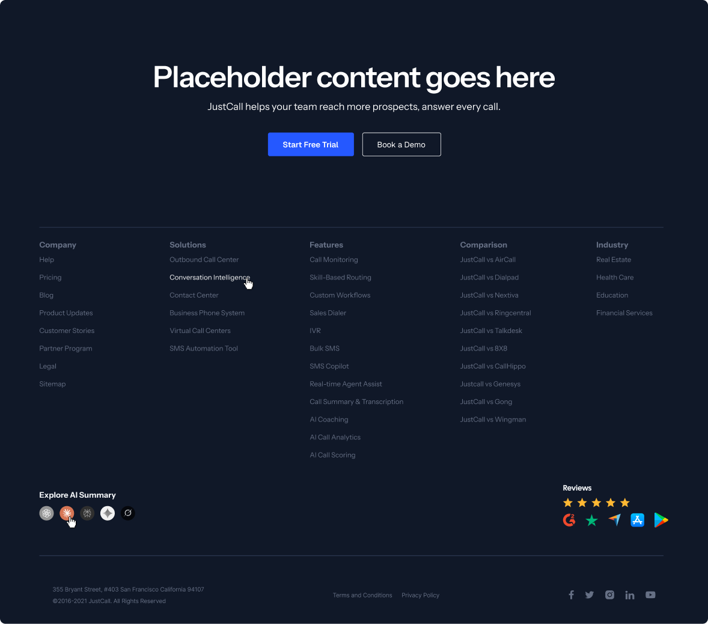
Observation: The CTA banner and footer existed as two separate components, each with its own background and layout.
Problem: Treating them separately meant duplicated design decisions, spacing, background, layout, for what is functionally one closing moment, risking drift in style over time.
Root Cause: No single system tying the CTA and footer together, so they were built and updated independently.
Fix: The CTA banner and footer are merged into one component, sharing the same dark background and layout. Only the headline and subtext stay customizable, everything else stays fixed.
Design Mechanics:
Single merged component: CTA and footer share one background and structure, removing the seam between them.
Locked structure, flexible copy: Only the banner text changes per page, keeping every ending consistent.
Two build variations: One with the CTA folded into the footer, one where it stays a separate block above, for lighter or heavier closings.
Hub

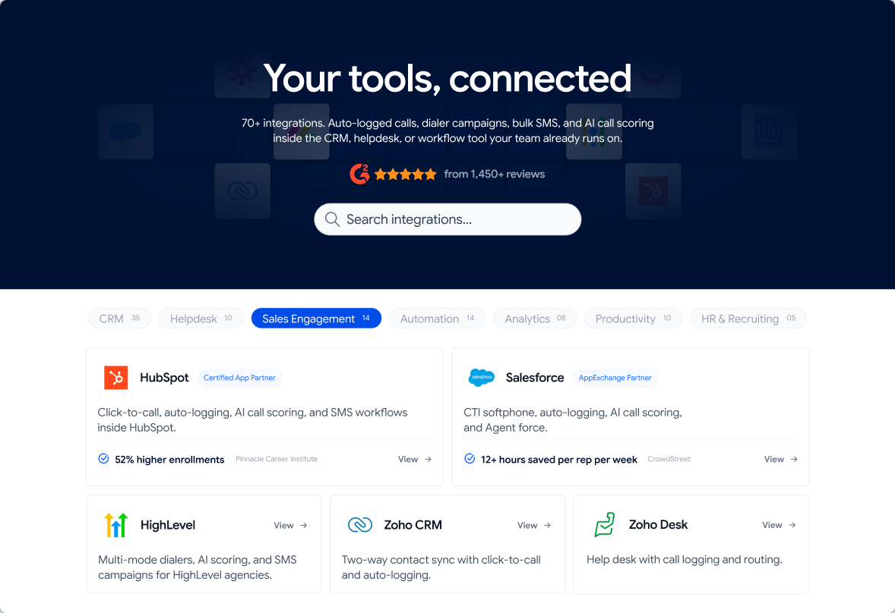
Observation: A left sidebar handles all filtering (Categories, Explore, Best For, Works With), while integration cards sit in a grid, split into "Most Popular" and "New Integrations" rows.
Problem: The sidebar takes up permanent space and forces vertical scanning through nested categories before finding a filter. Every card also carries the same visual weight, so nothing stands out as more relevant.
Root Cause: Filtering is treated as separate from browsing, and no card is designed to stand out from the rest.
Fix: The sidebar is replaced with horizontal filter pills showing counts per category (CRM 35, Helpdesk 10, etc.), turning filtering into a single scan instead of a nested list.
Two cards are also elevated with proof stats, giving viewers a fast, credible entry point before scanning the full list.
Design Mechanics:
Pill filters with counts: Category and count sit together in one row, so the viewer sees the option and its scale at once.
Elevated cards with proof stats: HubSpot and Salesforce are visually separated and paired with a stat and named customer, the same proof principle reused from Hero and Testimonials.
Search bar in hero: A dedicated search field lets viewers jump straight to a tool by name.
Reused trust badge: The G2 rating appears here too, reinforcing trust at another decision point.
Security Badges
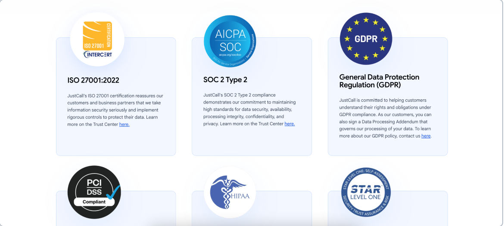

Observation: Badges are shown as large, colorful icons, each inside its own card with a title and paragraph of description, laid out in a 3 column grid across two rows.
Problem: Six cards with full paragraphs take up a lot of space for something that just needs to signal trust. The viewer has to read through detail they don't need, when a quick glance should be enough.
Root Cause: Compliance badges were treated as content to read, not proof to scan.
Fix: Badges are compressed into a single row of simple circular icons, each with just a label and status. A short headline and one line of context sit above, with a "Learn More" link for anyone who wants detail.
Design Mechanics:
Single row layouts: All six badges sit in one line, scannable in a glance instead of read card by card.
Minimal badge style: Icon, label, and status only, stripped of paragraph text that wasn't needed for a trust signal.
Optional detail: A single "Learn More" link keeps the deeper compliance info available without cluttering the fold.
Calculator
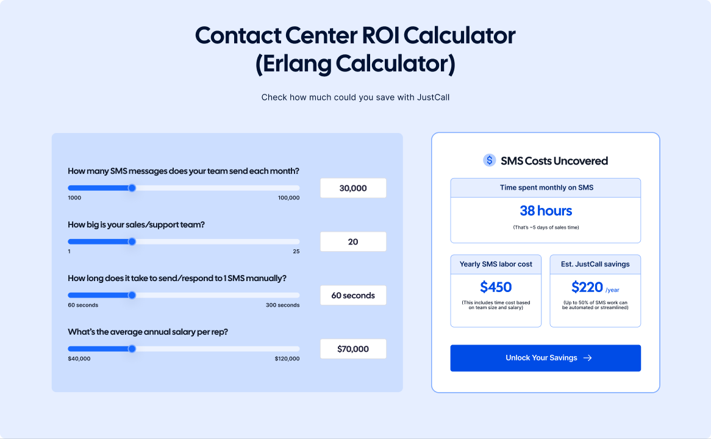

Observation: Inputs and results sit together in one flat card, sliders on the left, results panel on the right, both sharing the same background.
Problem: With no separation between input and output, both zones carry equal weight, so the result doesn't stand out. The assumptions behind the numbers are also missing, so results feel unexplained.
Root Cause: No visual hierarchy between input and output zones.
Fix: The result panel is pulled out as a separate, dark, floating card that overlaps the input card, signaling it's the outcome, not another input. Assumptions move into a collapsible "See how we got here" accordion, available on demand without cluttering the view.
Design Mechanics:
Detached result card: A separated, dark panel gives input and output distinct roles at a glance.
Collapsible assumptions: Methodology sits in an expandable accordion instead of a dense paragraph.
Consistent slider pattern: Sliders keep the same interaction style, so the fix is about hierarchy and trust, not relearning the tool.
Homepage Redesign


Looking at the homepage as a whole, the same issues we saw across individual components repeat themselves and compound.
The before version leads with a busy hero graphic, follows it with a scattered mix of badges, stats, and testimonials spread across separate folds, and closes with a dense, undifferentiated footer. Every section was doing its own thing, with no shared visual language tying the page together.
The after version fixes this at the page level, not just within each fold. The hero is calmer and center aligned, leading straight into a single clear action. Proof points, the G2 badge, the testimonial with stats, the security badges, are placed with intent, so trust is built progressively as the viewer scrolls, instead of all at once or scattered arbitrarily. Sections that used to compete for attention now follow a clear reading order, one message leads to the next.
The result is a page that feels lighter, even though it isn't necessarily shorter. Every fold pulls its weight, and the eye always knows where to look next.
Template
Product
A reusable page structure for product pages, so any new one comes together consistently instead of from scratch. Every fold ties back to a component fixed earlier in this audit, showing the system carries over to a different page type.
Hero fold (Left-Aligned): Left aligned, with a supporting product photo and a primary plus secondary CTA, giving the viewer a direct action and a lighter option.
Logo strip: Customer logos sit early on, so trust is established before the viewer scrolls further.
Testimonial with stats: A quote paired with its metrics, so proof and validation land in one place.
Capsule tab section: Active tab clearly highlighted, same content structure repeating across tabs.
Numbered steps: A short three step block, walking through a process in order.
FAQ accordion: Expandable questions, keeping answers available without adding page length.
Security badges: Compliance certifications shown as their own dedicated fold.
Integrations strip: A logo row with an exit link, acting as a light trust and capability signal.
Footer CTA banner: Closing CTA folded into the footer, same style throughout, only the copy changes.
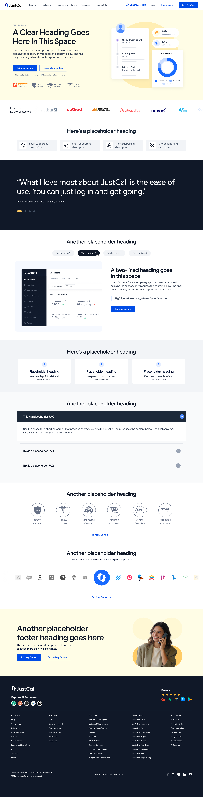

Template
Solutions
A reusable page structure for solution or industry pages, so any new one comes together consistently instead of from scratch. Every fold ties back to a component fixed earlier in this audit, proving the system works as a repeatable page, not just individual fixes.
Hero fold: Center aligned, with a live product graphic and a single clear message.
Logo strip: A static row of customer logos, giving the viewer upfront trust before reading on.
Capsule tabs: Highlighted active tab, consistent content pattern no matter which tab is open.
Testimonial with stats: Proof and social validation combined into a single fold instead of two.
Bento feature blocks: A columned layout (odd/even stack) alternating text and product screenshots, each block kept short and scannable.
Security badges: Compliance certifications shown as a dedicated trust fold.
Integrations strip: Logo row with a clear exit link, used as a lightweight capability signal.
Footer banner: A consistent closing call to action, with only the copy changing per page.


Template
Hub
A reusable page structure for directory or hub style pages, integrations, customer stories, or partner pages, so any new one comes together consistently instead of from scratch. Every fold ties back to a component fixed earlier in this audit, proving the system holds up here too.
Hero fold: Live product graphic or featured content, one clear message, with a search bar or CTA depending on the page.
Logo strip: Customer logos upfront, building trust before the scroll.
Capsule tabs: Category filters with counts in one row, narrowing results in a glance.
A grid of cards: A grid of cards, with a few pulled forward and backed by proof stats, giving the viewer a strong starting point.
Testimonial with stats: Quote and numbers together in one fold.
Bento feature blocks: Two-column layout alternating text and product screenshots, keeping each block short and scannable.
Security badges: Compliance certifications get their own trust fold.
Integrations strip:Logo row with a link out, doubling as a trust signal.
Footer banner: CTA and footer merged into one, only the copy changes.